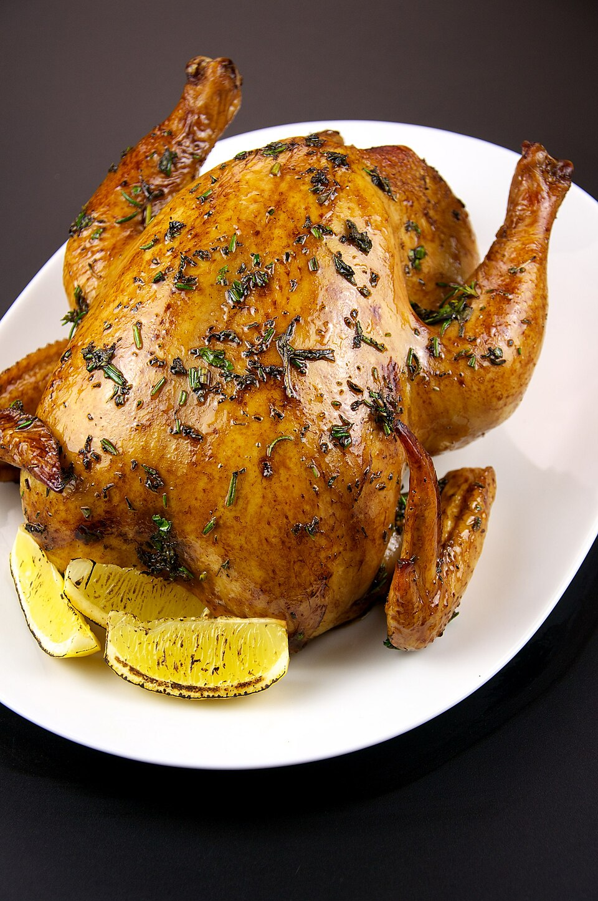

Aves · Frango
Frango ao forno

Ingredientes
- 1,5 kg de frango em pedaços
- 4 colheres (sopa) de maionese
- 2 cebolas grandes
- 2 colheres (sopa) de catchup ou massa de tomate
- Cheiro-verde e sal a gosto
Modo de preparo
- Tempere o frango com sal e cebola. Cubra com a maionese.
- Arrume em pirex, cubra com catchup e asse em forno médio até dourar.
- Escorra o excesso de gordura, salpique cheiro-verde picado e sirva bem quente.